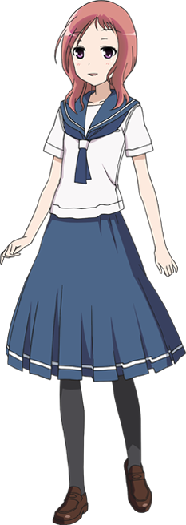
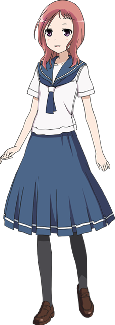

Datos de personajes y escuelas
Subsección donde se muestra la información sobre los personajes y escuelas principales que aparecen en el anime
Personajes de Kiyosumi

Miyanaga, Saki

Saki Miyanaga (宮永 咲, Miyanaga Saki) is the titular character of the story. She is a first-year student at Kiyosumi High School who is notorious for her ability to break even in every match,
as she didn't want to win against her family. However, after joining the mahjong club, she uses her skill for the sake of winning and hopes to progress to the nationals to reunite with Teru Miyanaga.
Haramura, Nodoka

Nodoka Haramura (原村 和, Haramura Nodoka) is the daughter of Kei Haramura and Kaho Haramura and a first-year at Kiyosumi High School who was the previous year's National Middle School Individual Champion.
Kataoka, Yuuki

Yuuki Kataoka (片岡 優希, Kataoka Yūki) is a first year student at Kiyosumi High School who has been friends with Nodoka Haramura since middle school.
Takei, Hisa

Hisa Takei (竹井 久, Takei Hisa), formerly known as Hisa Ueno (上野 久 Ueno Hisa), is a third year student at Kiyosumi High School and is the current president of the mahjong club, as well as president of the school's student congress.
Hisa has always wanted to enter the inter-high team mahjong tournament, but there weren't enough club members to form a five woman team in the previous years.
Someya, Mako

Mako Someya (染谷 まこ, Someya Mako) is a second year student at Kiyosumi High School who is the second person to join Hisa Takei in the mahjong club.
Miyanaga, Saki
Saki Miyanaga (宮永 咲, Miyanaga Saki) is the titular character of the story. She is a first-year student at Kiyosumi High School who is notorious for her ability to break even in every match, as she didn't want to win against her family. However, after joining the mahjong club, she uses her skill for the sake of winning and hopes to progress to the nationals to reunite with Teru Miyanaga.
Haramura, Nodoka
Nodoka Haramura (原村 和, Haramura Nodoka) is the daughter of Kei Haramura and Kaho Haramura and a first-year at Kiyosumi High School who was the previous year's National Middle School Individual Champion.
Kataoka, Yuuki
Yuuki Kataoka (片岡 優希, Kataoka Yūki) is a first year student at Kiyosumi High School who has been friends with Nodoka Haramura since middle school.
Takei, Hisa
Hisa Takei (竹井 久, Takei Hisa), formerly known as Hisa Ueno (上野 久 Ueno Hisa), is a third year student at Kiyosumi High School and is the current president of the mahjong club, as well as president of the school's student congress.
Hisa has always wanted to enter the inter-high team mahjong tournament, but there weren't enough club members to form a five woman team in the previous years.
Someya, Mako
Mako Someya (染谷 まこ, Someya Mako) is a second year student at Kiyosumi High School who is the second person to join Hisa Takei in the mahjong club.